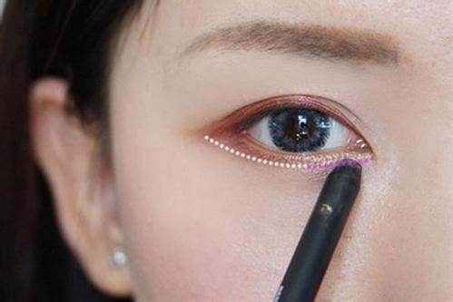
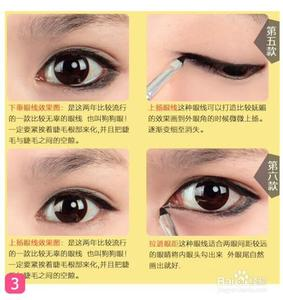

 |
|||
 |
Step1、珠光眼影打亮眼窝 一般MM都会有眼周暗沉的问题，这样会使眼睛看上去没神气。所以第一步是在整个眼窝上涂抹透明珠光眼影，打亮眼周，眼睛会变得干净、明朗，让黑色眼线更显清晰立体。 小ips： 眼部妆前乳是帮助眼妆打底的，在画眼线之前，可以用棉棒点些许妆前乳滋润下眼袋和眼头的部位，因为这个部位比较暗沉，而且秋冬时节眼头经常会脱皮，这样会影响眼线的美感。
|
||
Step2、内侧黏膜填补黑眼线 轻轻地拉提眼皮，从眼头往眼尾方向沿着睫毛根部细细的画上黑色的内眼线，不要让睫毛根部有空隙，否则会让眼妆显得做作不自然，这样眼妆的完整性与大眼效果就大打折扣了。 Tips： 在靠近眼尾1/3的部位加粗眼线，会让眼睛看上去更深邃有神。 |
|||
Step3、将黑色眼线自然晕开 单调利落的眼线会让你的眼睛看上去死板、无神，所以要把眼线自然晕开。轻轻地用笔刷将内眼线微微晕开，做出阴影就先抓出猫眼线条的宽度。 小Tips：MM们可以选择带有晕染刷头的眼线笔，两个功能合一，方便使用。 |
|||